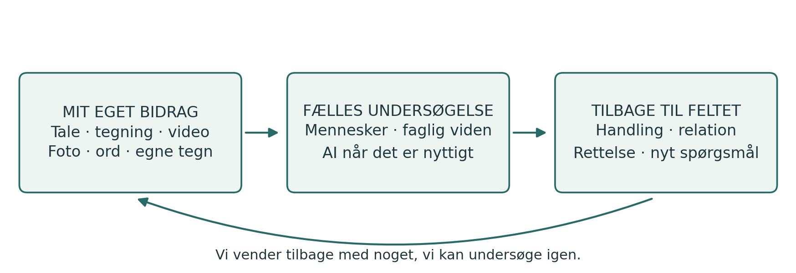
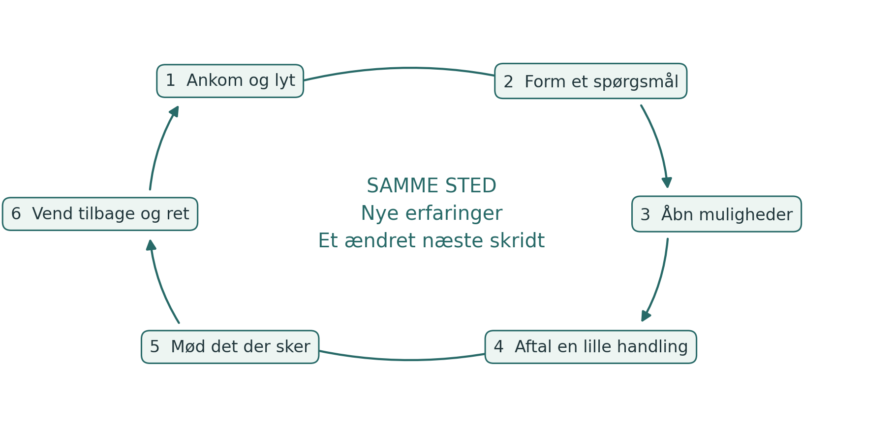
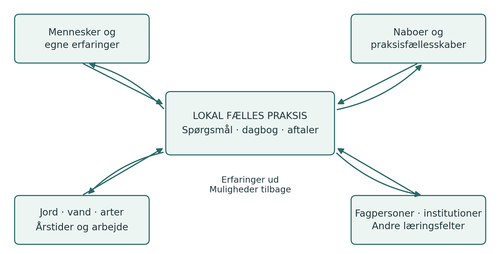
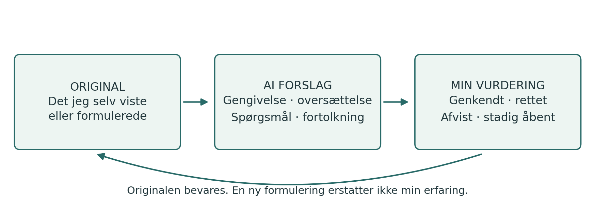

Feltets Dagbog
Feltets Dagbog
Fra egen erfaring til fælles handlemuligheder
Practice Guide med læringsspiraler, PG Ledger og kritisk AI-dialog
Dansk udgave v1.0.1 · 24 oktober 2026
Udgivet af Spiralweb Stewardship Association · Spiralweb Papers
Udviklet i arbejdet med Learning with Living Places
Feltets Dagbog er en åben praksisguide udgivet af Spiralweb Stewardship Association i Spiralweb Papers. Den begynder i menneskers arbejde med et levende sted: noget bliver bemærket, fastholdt og undersøgt sammen. En handling bliver mulig, og erfaringen fra den ændrer næste skridt. Guiden forbinder denne bevægelse med faglig viden, kritisk AI-dialog og ressourcer, som kan understøtte feltets fortsættelse.
Begynd med noget konkret fra egen praksis. Tale, tegning, egne symboler, foto, video og skrift kan fastholde erfaringen. Gruppen aftaler adgang til nødvendige redskaber og støtte; egen telefon er ikke en forudsætning. Et valgt bidrag giver et holdepunkt for senere sammenligning og korrektion. Mennesket er kritisk ven over for AI, alene eller sammen med andre. Erfaringen kommer først; ikke alt erfaret behøver registreres.

En sammenhængende praksis
Dagbogen rummer egne spor fra erfaringen. Den fælles undersøgelse forbinder valgte bidrag med et spørgsmål. PG Ledger holder den aftalte hukommelse om handlinger, beslutninger, ressourcer og det, der senere sker. Læringsspiralen er tilbagekomsten, hvor erfaring kan ændre forståelsen og den videre praksis. De følgende sider viser først et helt forløb og folder derefter funktionerne ud.
Guiden samler en praktisk anvendelse af Healthy Roots, PG Ledger og menneskelig myndighed i AI-samarbejdet. På spiralweb.earth findes foreningen og dens stedbundne relationer. På papers.spiralweb.earth findes tekster, protokoller og redskaber. Materialet kan bruges uden et samarbejde med foreningen. Egne erfaringer kan også føre til forslag om ændringer i de fælles redskaber.
Guiden kan bruges selvstændigt og tilpasses lokalt. Følg indføringen, begynd med et aktuelt spørgsmål eller brug formaterne som opslag. Ingen skal gennemføre alle ark. Indholdsoversigten er klikbar; begrebslinks giver adgang til det faglige grundlag. De kopierbare ark står samlet efter hovedteksten.
Feltets Dagbog · v1.0.1 1 / 27
Indhold og arbejdsredskaber
Læs først et helt forløb og forskellen mellem dagbog og ledger. Hovedteksten står på side 3–13. Begynd med egne bidrag på side 14–16. Når gruppen har brug for fælles hukommelse, vælg blandt formaterne på side 17–26.
03 En undersøgelse fra begyndelse til tilbagekomst
04 Dagbog fælles undersøgelse og PG Ledger
05 Læringsspiralens seks bevægelser
06 Erfaringsmateriale med tydeligt ophav
07 Vurderinger ukendt og det der ikke registreres
08 Fra egne bidrag til fælles spørgsmål
09 Mennesket som kritisk ven over for AI
10 Læringsaktiviteter med et tydeligt formål
12 Stewardship economy og fælles muligheder
13 Fælles hukommelse ansvar og efterprøvning
14 Arbejdsark til mit eget bidrag
15 Arbejdsark til et forsøg og en tilbagekomst
16 Arbejdsark til AI dialog og valgt deling
17 Når gruppen skal huske fælles og Format 1
21 Format 3 Afgrænset handling
23 Format 4 Beslutningshukommelse
27 Læsevej og vilkår for anvendelse
Hvem bruger hvad? Dagbog og hjælpeark er tilbud til alle. Observation og handling, Format 2 og 3, støtter gruppens undersøgelse. Format 1, 4 og 5 støtter fælles vurdering, beslutninger og økonomi. Aftalte ansvarshavere vedligeholder og bekræfter registreringerne; alle berørte skal kunne spørge og korrigere.
Ingen skal udfylde alle ark. Tomme felter er tilladte og må ikke udfyldes gennem gæt. Brug de udtryksformer og den mængde dokumentation, som opgaven kræver.
Feltets Dagbog · v1.0.1 2 / 27
En undersøgelse fra begyndelse til tilbagekomst
Dette illustrative forløb viser, hvordan dagbog, samtale, redskaber og handling kan arbejde sammen. Det er et eksempel til afprøvning, ikke en beretning om en allerede gennemført aktivitet.
Noget bliver bemærket
En dyrker filmer et sted med tør jord og fortæller på eget sprog, hvad hun har lagt mærke til. En anden tegner et område, som virker fugtigere. De bevarer deres egne bidrag i dagbogen med en enkel reference. Endnu har de forskellige iagttagelser og mulige forklaringer.
Et fælles spørgsmål tager form
Ved et møde viser de valgte bidrag. Gruppen sammenholder erfaringerne og vælger at undersøge jorddække. Den begrunder valget og bevarer andre spørgsmål til senere. AI kan hjælpe med en gengivelse og relevante forklaringer. Mennesker efterprøver dem og korrigerer spring fra observation til påstand.
En handling bliver aftalt
Gruppen afgrænser et lille forsøg, afklarer nødvendigt mandat og aftaler tid, opgaveholdere, materiale og næste besøg. Handlingsarket fastholder aftalen. Et dagbogsbidrag kan ved en reference indgå i den fælles hukommelse uden at blive omskrevet.
Arbejdet bag forsøget bliver synligt
En nabo tilbyder beskæringsmateriale. Holdet undersøger egnethed og aftaler transport og pleje. Det opdager, at én person ellers kommer til at bære for meget arbejde mellem møderne. Spørgsmålet udvides: Hvordan kan den nødvendige omsorg opretholdes? En beslutning og en faktisk udgift fastholdes i hvert sit relevante format.
Feltet og gruppen svarer tilbage
Ved næste relevante besøg sammenholdes nye observationer med udgangspunktet. AI har foreslået, at mindre vand er brugt, men det blev ikke målt. Gruppen retter teksten og undersøger, hvad der kan siges. Måske var transporten for tung, eller andre forhold forklarer forskellen. Forsøget og arbejdsdelingen ændres.
Erfaringen åbner næste mulighed
Gruppen kan nu invitere en rådgiver eller gårdskole ind i et mere præcist spørgsmål. En ny aftale kan give adgang til materiale, læring eller betaling for nødvendig opfølgning. Ved tilbagekomsten undersøges, hvad der faktisk blev muligt. Det fælles vidensgrundlag er blevet mere belyst, mens uenighed og usikkerhed stadig kan være til stede.
En sådan bevægelse kan tage flere arbejdsdage eller en sæson. Et bedre spørgsmål, en nødvendig pause eller et begrundet fravalg kan være en væsentlig tilbagekomst.
Feltets Dagbog · v1.0.1 3 / 27
Dagbog fælles undersøgelse og PG Ledger
Dagbog og ledger holder forskellige dele af samme praksis. Dagbogen giver plads til at opdage og undersøge. Ledgeren forbinder udvalgt materiale med den fælles hukommelse, der er brug for til ansvar og opfølgning. Læringsspiralen er bevægelsen gennem tiden; den er ikke endnu et dokument.
Del | Funktion | Et konkret eksempel |
|---|---|---|
Min dagbog | Egne observationer, spørgsmål, forsøg og overvejelser i valgte medier. | En video af vandets bevægelse og min forklaring. |
Fælles undersøgelse | Samtale, sammenligning og faglig efterprøvning omkring et valgt spørgsmål. | Vi undersøger hvorfor vandet samler sig her. |
PG Ledger | Aftalt og korrigerbar hukommelse om grundlag, ansvar, ressourcer og senere konsekvenser. | Observationen forbindes med en handling og et senere besøg. |
Fem operative formater | Redskaber til bestemte situationer i den fælles hukommelse. | Et ark fastholder en handling; et andet en udgift. |
Tilbagekomst | Erfaring får mulighed for at ændre forståelse, aftaler og næste skridt. | Efter regn vurderer vi forsøget og ændrer det. |
Hvornår bliver dagbogsmateriale relevant for ledgeren
Når gruppen har et klart formål med at kunne genfinde et bidrag og forbinde det med fælles arbejde, aftales hvilken del der indgår, hvem der har adgang, og hvordan den kan korrigeres. En henvisning til originalen kan være tilstrækkelig. Personligt materiale bliver ikke automatisk fælles, og hele dagbogen behøver aldrig indgå.
Hvad gør ledgeren levende
Et enkelt ark er en registrering. Forbundne registreringer bliver til en brugbar hukommelse, når deres sammenhæng, ophav og ansvar kan genfindes. PG Ledger bliver levende gennem tilbagekomst: mennesker undersøger, hvad der fulgte, og lader det ændre næste bevægelse. Fem udfyldte skemaer sikrer ikke i sig selv denne praksis.
En personlig dagbog kan forblive selvstændig. Fælles arbejde kan også begynde i et eksisterende lokalt notatsystem eller en samtale. Erfaring har betydning før registrering; et ark er ikke en adgangsbillet til at blive hørt. Det afgørende er forbindelsen mellem erfaring, aftale, handling og korrektion.
Feltets Dagbog · v1.0.1 4 / 27
Læringsspiralens seks bevægelser
Læring opstår gennem gentagen kontakt med et spørgsmål, dets praktiske konsekvenser og andre menneskers erfaringer. En tur i spiralen kan vare en samtale, flere arbejdsdage eller en sæson. Rækkefølgen giver retning; tempo og tilbagekomster følger undersøgelsens behov.

1. Ankomme og lytte. Hvem og hvad er her, og hvilke erfaringer bringer vi med?
2. Forme et spørgsmål sammen. Hvad ønsker vi at forstå eller forandre?
3. Åbne forklaringer og muligheder. Hvilke læsninger og alternativer bør undersøges?
4. Gøre en handling mulig. Hvad vil vi prøve, med hvilke ressourcer og hvilket ansvar?
5. Møde det, der faktisk sker. Hvad observerer vi, også når det overrasker os?
6. Vende tilbage og lade erfaringen ændre formen. Hvad skal fortsætte, revideres eller ophøre?
En foreløbig forventning forbinder arbejdet
En working wager angiver, hvad gruppen forventer, og hvad der kan få den til at ændre opfattelse. Den forbinder spørgsmålet med handling, læring, ressourcer og senere vurdering. Eksempel: Et bestemt jorddække forventes at bevare fugt, hvis materialet er egnet og arbejdet kan bæres. Undersøg både planteforhold, alternative forklaringer og faktisk arbejdsbelastning.
Feltets Dagbog · v1.0.1 5 / 27
Erfaringsmateriale med tydeligt ophav
Den personlige feltdagbog kan bestå af papir, lyd, billeder eller video. Den enkelte vælger udtryksform. Feltets fælles dagbog rummer valgte bidrag og aftaler, som der er grund til at bevare. Forskelle mellem bidragene bevares. En vært, arbejdsgiver eller facilitator kan ikke tale for andres erfaringer.
Observation før sammenfatning
Begynd med det, personen bemærker, gør eller vil vise. Knyt dato, sted og ophav til materiale, der skal kunne genfindes. En reference kan være B01: første besøg den [dato] på [sted]; foto og lyd kan mærkes B01-foto og B01-lyd. Gruppen vælger selv sit system og beskytter følsomme steder og identiteter.
Tre planter har gule blade er en iagttagelse. Jeg tror, de mangler vand er en fortolkning. Erfaringen er allerede viden, som gentagelser, målinger og andre erfaringer kan korrigere. En optagelse bevarer bidraget; den beviser ikke alene forklaringen.
Formidling med bekræftelse
Ved skrivehjælp, oversættelse eller optagelse bevares egne ord og betydning. Bearbejdningen gengives til ophavspersonen, som retter eller bekræfter den. Hjælp og oversættelsesled fremgår ved væsentlig dokumentation. Originalen bevares, når forklaringen ændres. En mundtlig korrektion har samme ret til at få virkning som en skriftlig.
Personlig råderet og fælles enheder
Personlig opbevaring, gruppens adgang, AI-behandling og offentliggørelse er særskilte valg med bestemte formål og modtagere. Noget kan forblive uregistreret. Nødvendige oplysninger om økonomi og sikkerhed afgrænses og forklares særskilt.
Del som udgangspunkt ikke identificerbare billeder af børn. En eventuel undtagelse kræver forudgående afklaring af gældende regler, relevant samtykke fra forældre eller værge og barnets egen tilkendegivelse efter alder og modenhed. Barnets privatliv og sikkerhed har forrang.
Aftal ansvar, adgang, opbevaring, synkronisering og fjernelse af kopier på fælles enheder. Sikr en aftalt kopi før sletning. Før ekstern AI-behandling afklares, hvad der sendes, og tjenestens vilkår for opbevaring og videre brug. Send kun det valgte og nødvendige materiale.
Tid som del af opgaven
I Learning with Living Places indgår aftalt observation, dagbog og fælles bearbejdning i betalt lærings- og arbejdstid. Ekstra bidrag er frivillige. Andre grupper aftaler en realistisk arbejdsbyrde. Dokumentation skal understøtte arbejdet og kunne forenkles, når den belaster det.
Feltets Dagbog · v1.0.1 6 / 27
Vurderinger ukendt og det der ikke registreres
En vurdering siger noget om et bestemt forhold på et bestemt tidspunkt. Et valg om registrering siger noget om, hvad der overhovedet skal fastholdes. De to ting må ikke blandes sammen.
Stoplyset er en begrundet menneskelig vurdering
Markering | Betydning for det næste skridt |
|---|---|
Grøn | Grundlaget kan understøtte et lille næste skridt inden for aftalt mandat. |
Gul | Forhold kræver opmærksomhed, tilpasning og en ny vurdering. |
Rød | Der er behov for beskyttelse, pause eller reparation. |
Ukendt | Der er utilstrækkeligt grundlag for at foretage vurderingen. Det er ikke gul. |
Vurder det levende sted, menneskers bæreevne og fælles forvaltning hver for sig. Bevar dato, grundlag og usikkerhed; beregn ingen gennemsnitsfarve. Grøn ét sted opvejer ikke rød et andet sted. Ved menneskelig udmattelse standses eller reduceres det arbejde, som afhænger af den; nødvendig omsorg og ansvarlig overdragelse kan fortsætte.
Ukendt er forskelligt fra ikke relevant og udeladt
Ukendt: Spørgsmålet er relevant, men vi ved endnu ikke nok. Ikke relevant: Spørgsmålet passer ikke til denne undersøgelse. Bevidst udeladt: Noget registreres ikke eller indgår ikke i dette materiale. Det siger ikke, hvilken tilstand forholdet har. Et tomt felt har ingen entydig betydning; hverken mennesker eller AI må gætte den.
Retten til at lade noget forblive uregistreret
Et spørgsmål kan mødes gennem en observation, en personlig erfaring eller noget, der opleves og værnes om uden at blive skrevet eller optaget. Den enkelte vælger, hvad der fastholdes. Andres indre erfaringer er deres at tilbyde. Beskyttet fælles viden følger de berørtes egne rettigheder og aftaler.
Det er heller ikke et krav at markere bevidst udeladt. Selv oplysningen om, at noget findes, kan være følsom. Tavshed behøver ingen forklaring og er ingen tilladelse til at udfylde hullet. Aftalte nødvendige oplysninger om økonomi, sikkerhed og fælles ansvar afgrænses særskilt; de giver ikke adgang til hele personens dagbog.
Eksempel: Jordfugt kan være ukendt, fordi den ikke er undersøgt tilstrækkeligt. Et spørgsmål om et vandløb kan være ikke relevant for dette bed. En privat optagelse kan holdes uden for fællesmaterialet uden at blive omtalt dér.
Fagligt grundlag: Knowing From the Ground · Moral Biology
Feltets Dagbog · v1.0.1 7 / 27
Fra egne bidrag til fælles spørgsmål
Et AnchorPoint holder lokale forbindelser mellem mennesker, steder, viden, aftaler og ressourcer over tid. Den fælles undersøgelse kan foregå fysisk og fortsætte gennem relationer og online. En fælles repræsentation skaber ikke i sig selv fælles myndighed; beslutningsretten skal være aftalt.

En enkel fælles åbning
Hver person tilbydes plads til ét valgt bidrag og kan også undlade at dele. Gruppen undersøger fælles træk og forskelle og vælger et spørgsmål med en synlig begrundelse. Valget tager hensyn til interesse, betydning, tid og gennemførlighed. Andre spørgsmål bevares til senere tilbagekomst. Uenighed om valget og hvem der ikke blev hørt, skal kunne fremgå.
Når spørgsmålet rækker udad
Aftal hvem der kontaktes, hvad gruppen vil spørge om, hvilket materiale der kan deles, og hvem der bringer svaret tilbage. Rådgivning, laboratorieanalyse, institutionsdialog eller kontakt til andre dyrkere vurderes sammen med de oprindelige erfaringer. Et svar udefra bliver først en del af næste handling efter relevant lokal vurdering og aftale. Dette er bottom-linking i praksis.
Bioregionale forbindelser
Følg de forhold, spørgsmålet afhænger af: vand, jord, arter, frø, fødevarer, arbejde og institutionelle beslutninger. Kort og sæsonkalendere kan vise forbindelser på tværs af ejendoms- og projektgrænser. Forskellige stemmer og faglige metoder kan korrigere hinanden. Det, der faktisk sker i feltet, kan modsige enhver af vores forklaringer.
Feltets Dagbog · v1.0.1 8 / 27
Mennesket som kritisk ven over for AI
Mennesket indtager, alene eller sammen med andre, rollen som kritisk ven over for AI: åbent for bidragets muligheder og opmærksomt på fejl, overfortolkning og forskydning af betydning. AI kan støtte formulering, oversættelse, kildearbejde og sammenligning. Dens bidrag får faglig betydning gennem menneskers efterprøvning og mødet med praksis.

Gengivelse før fortolkning
AI får først en afgrænset opgave og det materiale, der er valgt til formålet. Ved et foto eller en optagelse efterprøves gengivelsen, før der arbejdes videre. Uklare ord, billeder og oversættelser forbliver markeret som uklare. Ved utilstrækkelig sprog- eller medieunderstøttelse anvendes kvalificeret menneskelig hjælp.
En indgang til dialogen
Gengiv først det, du faktisk kan læse, høre eller se i det valgte materiale. Markér tvivl, og vent på min korrektion. Skeln mellem min observation, min forklaring og dine forslag. Udfyld ikke tomme felter. Bevar ukendt, ikke relevant og bevidst udeladt som forskellige oplysninger, når de er angivet. Udled ikke noget af tavshed, og forsøg ikke at genskabe udeladt indhold. Foreslå først derefter alternative forklaringer og måder at undersøge dem på. Opfind ingen oplysninger eller kilder.
Mennesket undersøger herefter: Hvilke udsagn kommer fra mit materiale? Hvad har AI tilføjet? Hvilke kilder kan kontrolleres? Er usikkerhed og uenighed bevaret? Hvad kræver en ny observation eller en fagpersons vurdering? AI kan også undlade en relevant mulighed; dens svar afgrænser ikke hele undersøgelsen.
Last Impulse som udøvet myndighed
Den relevante person kan forstå, rette, afvise og standse en fremstilling eller handling og er ansvarlig inden for sit mandat. Tavshed udgør ingen godkendelse. Enighed om en formulering er heller ikke tilladelse til offentliggørelse eller praktisk handling.
Eksempel: Jorden føltes køligere bliver i AI-teksten til Vandforbruget faldt. Mennesket påpeger springet, retter teksten og afgør, hvilken undersøgelse der er nødvendig. Original, AI-bidrag og korrektion giver et konkret grundlag for at vurdere AI i Right Relationship.
Feltets Dagbog · v1.0.1 9 / 27
Læringsaktiviteter med et tydeligt formål
En læringsaktivitet giver mulighed for at øve en bestemt kunnen eller forståelse. Den kan være en kort samtale, en markvandring, et forsøg, en demonstration eller en opgave mellem to møder. Dagbogen kan rumme erfaring fra aktiviteten. Et operativt format anvendes, når der opstår et konkret behov for fælles registrering.
Aktivitet | Hvad man øver | Muligt materiale |
|---|---|---|
Bemærke og beskrive | Skelne en iagttagelse fra dens mulige forklaring. | Tegning, ord, foto eller egen optagelse. |
Sammenligne steder eller tidspunkter | Undersøge ligheder, forskelle og vilkår for sammenligning. | To observationer med kendt sammenhæng. |
Undersøge AI bidrag | Genkende, rette og anfægte en bearbejdning. | Original, AI-forslag og menneskelig korrektion. |
Vælge og handle sammen | Begrunde et valg og afklare myndighed, ressourcer og opfølgning. | Et fælles spørgsmål og en afgrænset aftale. |
Hente viden eller støtte | Formulere et behov og vurdere et svar fra andre. | En forespørgsel og noget brugbart tilbage. |
Vise andre en praksis | Forklare og demonstrere, hvad man har lært, med plads til spørgsmål. | En demonstration eller et valgt læringsbidrag. |
Seks spørgsmål til tilrettelæggelsen
Formål: Hvad skal aktiviteten hjælpe med at lære?
Udgangspunkt: Hvilken erfaring eller hvilket materiale begynder vi med?
Handling: Hvad gør vi konkret, med hvilken støtte og tidsramme?
Samtale: Hvad undersøger vi sammen, og hvor kan vi være uenige?
Hukommelse: Hvad er værd at bevare, hos hvem og i hvilken form?
Tilbagekomst: Hvornår og hvordan bruger vi erfaringen igen?
Aftalte opgaver indgår i den betalte lærings- og arbejdstid i programmet. Der er ingen forventning om en daglig aflevering fra den personlige dagbog. En aktivitet er vellykket, når den åbner relevant læring og handling; dokumentationens omfang er ikke et mål i sig selv.
Feltets Dagbog · v1.0.1 10 / 27
Tilrettelæggelse over tid
Rytme og faglig sammenhæng
En arbejdsdag kan åbne med, hvad gruppen vil være opmærksom på, og afsluttes med, hvad der skal følges op. Tilbagekomster knyttes til handlinger, sæsoner og konkrete beslutninger. Gruppen fastlægger en kadence for fælles gennemgang, så spørgsmål, ressourcer og erfaringer hænger sammen uden unødvendig gentagelse af dokumentation.
De fem læringsstrenge er jord, vand og sted; fødevaresystemer og levesteder; stewardship economy; samarbejde og institutioner; undervisning og udveksling. Ét spørgsmål kan forbinde flere strenge. De bruges til at åbne undersøgelsen og opdage oversete sammenhænge. Skab også plads til at vise en teknik, gå på opdagelse eller dele noget overraskende uden krav om registrering.
Et eksempel med to læringsarealer
På en gård forberedes to arealer til forskellige dyrkningsforsøg. Holdet beskriver deres udgangspunkter gennem egne observationer og relevant faglig undersøgelse. Det vælger et spørgsmål om eksempelvis jorddække og vand, aftaler et lille forsøg og dokumenterer også materialer og arbejdstid. En gårdskole eller rådgiver inddrages, når det kan hjælpe undersøgelsen. Ved næste relevante besøg vurderes forløbet og næste skridt.
Fase | Fælles arbejde | Grundlag for næste fase |
|---|---|---|
Forberedelse | Programstewards prøver metoden og afklarer sprog, adgang, roller og sikkerhed. | Et afprøvet første tilbud og tydelige aftaler |
Åbning | Holdet afprøver udtryksformer og er med til at vælge spørgsmål. | Lokale spørgsmål og tilpassede redskaber |
Undersøgelse | Arbejde, observation, faglig dialog og afgrænsede forsøg. | Erfaringer, rettelser og beslutninger |
Udveksling | Valgt materiale bringes i samtale med relevante andre. | Brugbare svar og nye forbindelser |
Fortsættelse | Læring, udstyr, ressourcer og ansvar gennemgås. | Aftalt overdragelse og realistiske næste skridt |
Forberedelse og omsorg
Planlæg tid til at forberede redskaberne, før holdet begynder. Aftal praktiske forhold, udstyr, sikkerhed og nødvendige kompetencer før handling. Observation giver ikke tilladelse til risikofyldt kontakt med vand, jord, planter eller installationer. Aftalte opgaver finansieres eller afgrænses åbent. Økologisk udvikling og videre samarbejde kan række ud over en bevilling uden at være finansieret af den.
Feltets Dagbog · v1.0.1 11 / 27
Stewardship economy og fælles muligheder
Stewardship economy undersøger, hvordan arbejde, viden, ressourcer og ansvar kan understøtte de levende forhold, som mennesker og samfund afhænger af. Betaling kan beskytte tid og bæreevne; den udtrykker ikke et menneskes eller et steds samlede værdi. Undersøgelsen forbinder dyrkning med de relationer og rammevilkår, der gør fortsat omsorg mulig.
Abundance betegner både menneskelig skabende evne og de muligheder, som kan åbnes gennem samarbejde. Spørgsmålet er konkret: Hvad findes allerede, hvad kan udvikles, og hvad kan vi få adgang til sammen? Mulighederne kan omfatte materialer, rådgivning, færdigheder, penge, adgang og aflastning. Mangel og nødvendige udgifter forbliver synlige.
Spørgsmål fra feltet | Mulig forbindelse | Mulig tilbagekomst |
|---|---|---|
Hvordan holder jorden fugt? | Naboer med egnet overskudsmateriale | Jorddække og transportaftale |
Hvordan forbedres jorden? | Kompostkyndige og husdyrholdere | Egnet kompost eller gødning og vejledning |
Hvordan får vi flere planter? | Frøfællesskab eller gårdskole | Frø, stiklinger og formeringskundskab |
Hvordan kan vandingen forbedres? | Dyrkere og teknisk rådgivning | Et forsøg, en reparation eller et budget |
Hvad forklarer denne skade? | En relevant fagperson | Vurdering og et sikkert næste skridt |
Hvordan går erfaringen videre? | Andre dyrkere og læringsgrupper | Demonstration eller læringsmateriale |
Hvordan finansieres næste skridt? | Gruppens ansøgning og dialog | En konkret anmodning med belæg og priser |
Hvem kan bære arbejdet? | Fælles gennemgang af opgaver | Afløsning og overdragelse af ansvar |
Følg bidraget tilbage til praksis
Skeln mellem idé, kontakt, aftale, modtaget bidrag og faktisk virkning. Vurder egnethed, sikkerhed, transport, arbejdstid, ejerskab og videre ansvar. En mulig donation er ikke en modtaget ressource. Fasthold relevante afviste tilbud og skjult arbejde, når det kan ske uden at overskride aftalte grænser.
The Steward’s Journey beskriver flere mulige relationer til arbejdet, uden en fast rækkefølge. En dyrker kan undersøge sit sted selv, udveksle erfaringer med andre eller indgå en afgrænset aftale om et forsøg. Støtte kræver sin egen aftale; den skal ikke optjenes gennem bestemte trin. Peer-undervisning og fundraising kan udvikles, hvor mennesker ønsker det og har mulighed for det.
Feltets Dagbog · v1.0.1 12 / 27
Fælles hukommelse ansvar og efterprøvning
PG Ledger forbinder udvalgte observationer med handlinger, beslutninger, ressourcer og senere konsekvenser. Formaterne anvendes efter opgaven. Originaler og henvisninger genbruges; samme materiale omskrives ikke til flere parallelle sandheder.
Operativt format | Funktion |
|---|---|
Observation | Fastholder det iagttagne, ophav, sammenhæng og usikkerhed. |
Afgrænset handling | Afgrænser højst tre bærlige handlinger med ansvar, stopmulighed og tilbagekomst. |
Beslutningshukommelse | Bevarer begrundelse, mandat, væsentlig uenighed og senere ændringer. |
Økonomiske spor | Forbinder pengestrøm, formål, dokumentation og senere observation. Formelt regnskab føres særskilt. |
Fælles vurdering | Holder vurderinger af Land og Liv, Steward Viability samt Governance og Commons adskilt. Ingen samlet score. |
Arbejdsaftaler der kan anvendes
Gruppen aftaler opgaveholdere og afløsning, beslutningsmandater, håndtering af uenighed og tidspunkt for fælles revision. Finansiering og lokal undersøgelse forbindes gennem tydelige formål og ansvar. Personer godkender ikke egne betalinger eller behandler klager over sig selv. En uafhængig kontaktvej er kendt og tilgængelig.
Mennesker, der ønsker det, kan udvikle peer-undervisning eller nye læringsfællesskaber og selv formulere deres mål. Den fælles organisering skal give plads til både kontinuitet og rotation og synliggøre omsorg, oversættelse og koordinering. Frivillighed bruges ikke til at dække over nødvendige, ufinansierede funktioner.
Undersøg om metoden virker
Vurder gennem konkrete forløb, om den enkelte kan genkende og korrigere sit bidrag, udfordre AI, påvirke et fælles spørgsmål og anvende erfaring ved en tilbagekomst. Bevar både hjælpsomme og misvisende AI-bidrag samt den menneskelige korrektion. Det giver grundlag for forskning i læring og AI-brug uden at forveksle flydende tekst med læring. Afprøv også, om materialet er let at begynde med, om symbolerne forstås, og om en rettelse faktisk ændrer det videre arbejde.
Følg også feltets udvikling, arbejdsbelastning og reelle beslutningsmuligheder. Økologisk forbedring opvejer ikke udmattelse eller tilsidesatte rettigheder. Ukendt og fravalg af registrering er ikke tegn på fiasko. Erfaring kan korrigere toolbox, forskning og protokol. Vurder AI-gevinster efter tid til kontrol, oversættelse og eventuelt flyttet arbejde.
Feltets Dagbog · v1.0.1 13 / 27
Arbejdsark til mit eget bidrag
Brug tegning, symboler, ord, foto, lyd eller video. Arket er et tilbud; henvis til en valgt original. Erfaring behøver ikke blive registreret for at få betydning i samtalen.
Dato eller tidspunkt __________________ Sted __________________
Mit mærke eller min reference __________________
Det jeg bemærker eller gerne vil vise
Det jeg undrer mig over
________________________________________________________________________
________________________________________________________________________
Det minder mig om eller det ved jeg fra egen erfaring
________________________________________________________________________
________________________________________________________________________
Hvis jeg bruger en optagelse eller et foto er referencen __________________
Hvis jeg har fået hjælp til at fastholde mit bidrag __________________
Dette er mit eget materiale. Jeg vælger, hvad der fastholdes og deles. Tomme felter kræver ingen forklaring. En deling aftales for et bestemt bidrag og formål.
Feltets Dagbog · v1.0.1 14 / 27
Arbejdsark til et forsøg og en tilbagekomst
Et tilbud til samtale og tilbagekomst. Henvis til relevante operative formater, så oplysninger ikke gentages. Ukendt, ikke relevant og udeladt holdes adskilt, når de angives; tomme felter kræver ingen forklaring.
Sted __________________ Dato __________________ Reference __________________
Vores spørgsmål og foreløbige forventning
________________________________________________________________________
________________________________________________________________________
Det vi vil prøve og hvad der kunne ændre vores opfattelse
________________________________________________________________________
________________________________________________________________________
Hvem gør hvad med hvilke ressourcer og tilladelser
________________________________________________________________________
________________________________________________________________________
Hvornår vi vender tilbage og hvad der får os til at stoppe
________________________________________________________________________
Tilbagekomst med dato hvad skete der faktisk
________________________________________________________________________
________________________________________________________________________
Det vi ændrer eller stadig forstår forskelligt
________________________________________________________________________
________________________________________________________________________
Henvis eventuelt til observation, beslutning eller udgift. En forventet virkning er ikke et observeret resultat.
Feltets Dagbog · v1.0.1 15 / 27
Arbejdsark til AI dialog og valgt deling
Mennesket er kritisk ven over for AI, alene eller sammen med andre. Original, bearbejdning og korrektion holdes adskilt. AI må ikke udfylde tomme felter, gætte på tavshed eller genskabe udeladt indhold.
Dato __________________ Mit materiales reference __________________
AI tjeneste eller anden hjælp hvis relevant __________________
Den afgrænsede hjælp jeg bad om
________________________________________________________________________
Det AI gengav eller foreslog
________________________________________________________________________
________________________________________________________________________
Det jeg genkender retter afviser eller endnu ikke ved
________________________________________________________________________
________________________________________________________________________
________________________________________________________________________
Det jeg eller vi nu vil undersøge eller gøre
________________________________________________________________________
________________________________________________________________________
Hvis jeg vælger at dele noget
Det valgte bidrag __________________
Med hvem __________________ Til hvilket formål __________________
Må det sendes til en AI tjeneste __________________
Må noget offentliggøres og i hvilken form __________________
Hvordan min rettelse eller ændrede delingsbeslutning håndteres __________________
En delingsaftale omfatter kun det aftalte. Forklar eventuelle begrænsninger i sletning eller tilbagetrækning, før materialet sendes videre. En anden persons rettigheder følger ikke automatisk med mit ja.
Feltets Dagbog · v1.0.1 16 / 27
Når gruppen skal huske fælles
Format 1 Fælles vurdering
De fem formater vælges efter opgaven. Alle kan bidrage, spørge og korrigere. Aftal, hvem der fører arket, og hvem der har mandat til at bekræfte vurdering, beslutning eller økonomisk registrering. Ingen skal udfylde alle fem.
PG Ledger Format 1 · Steward Review Dashboard · Dansk tilpasning i denne guide
Kildeudgave v1.4.2 · 18 oktober 2026 · https://papers.spiralweb.earth/formats/format1-dashboard
Når gruppen skal vurdere, om næste periode kan bæres, hjælper dette format med at holde de tre forhold adskilt.
Bruges ved en aftalt tilbagekomst til at læse tre forhold hver for sig: det levende sted, menneskers mulighed for at fortsætte og den fælles forvaltning. Vurderingen tilhører mennesker med relevant indsigt og mandat. Den er ikke en måling eller en samlet karakter.
Illustrativt eksempel fra samme undersøgelse
Land og Liv
Overfladen er delvist dækket. Fugt blev vurderet ved ét besøg; årsagen til forskelle er endnu uafklaret. Læsning: Ukendt.
Menneskers bæreevne
Aftalte timer er brugt, men transporten kræver mere tid end planlagt. Læsning: Gul med behov for ny aftale.
Fælles forvaltning
Mandat og opgaveholdere er kendt; retten til at dele en optagelse er ikke afklaret. Den deles ikke endnu.
Anvendelse og forbindelse
Eksemplet begrunder ingen samlet farve. Ukendt er utilstrækkeligt grundlag for en vurdering, ikke gul. Gruppen aftaler næste afgrænsede periode og bevarer væsentlig uenighed. Registrering kan udelades; udeladelse er ikke en tilstandsvurdering.
På næste side findes guidens danske arbejdsark. Det er en tilpasset udgave med samme hovedfunktion. Kildeudgavens fulde format og gældende version kan åbnes via linket. Felter kan forbindes med et mundtligt bidrag, en tegning eller en optagelse.
Feltets Dagbog · v1.0.1 17 / 27
Format 1 Arbejdsark
PG Ledger Format 1 · Steward Review Dashboard · Dansk tilpasning i denne guide
Kildeudgave v1.4.2 · 18 oktober 2026 · https://papers.spiralweb.earth/formats/format1-dashboard
Sted eller relation __________________ Dato eller periode __________________
Ophav og ansvar __________________ Reference og adgang __________________
Formål med vurderingen __________________ Medvirkende __________________
Når en vurdering er aftalt, vælges grøn, gul, rød eller ukendt. Ellers står feltet tomt.
Land og Liv grundlag fortolkning og usikkerhed
________________________________________________________________________
________________________________________________________________________
Menneskers bæreevne grundlag fortolkning og usikkerhed
________________________________________________________________________
________________________________________________________________________
Fælles forvaltning grundlag fortolkning og usikkerhed
________________________________________________________________________
________________________________________________________________________
Uenighed næste afgrænsede skridt ansvar og tilbagekomst
________________________________________________________________________
________________________________________________________________________
Ingen gennemsnitsfarve. Grøn kan understøtte et lille næste skridt; gul kræver tilpasning; rød kræver beskyttelse, pause eller reparation. Ukendt er utilstrækkeligt grundlag. Tomt er ingen vurdering og må ikke udfyldes gennem gæt.
Feltets Dagbog · v1.0.1 18 / 27
Format 2 Observation
PG Ledger Format 2 · Observation Sheet · Dansk tilpasning i denne guide
Kildeudgave v1.3.2 · 18 oktober 2026 · https://papers.spiralweb.earth/formats/format2-observation
Når en observation skal kunne genfindes og sammenlignes, hjælper dette format med at fastholde grundlaget.
Bruges, når noget ved et sted, et besøg eller en hændelse er værd at fastholde. Beskriv først det bemærkede og hvordan observationen er gjort. De otte landbaserede opmærksomhedspunkter på arket er mulige indgange, som kan ændres eller udelades.
Illustrativt eksempel fra samme undersøgelse
Iagttagelse
Ved besøg B01 mærkes overfladen tør to steder. Tre planter har gule blade. B01-foto og B01-lyd henviser til egne bevarede bidrag. Systemet B01 er forklaret i afsnittet om ophav.
Foreløbig forklaring
Vandmangel er én mulighed. Jord, art, tidligere vanding og andre forhold er ikke undersøgt tilstrækkeligt.
Næste afklaring
Gruppen sammenholder observationen med vandingens forløb og aftaler en mere ensartet sammenligning.
Anvendelse og forbindelse
Ikke observeret betyder ikke fravær. En mulig artsbestemmelse kræver efterprøvning. Bevar sted, tidspunkt, observationsindsats og usikkerhed.
På næste side findes guidens danske arbejdsark. Det er en tilpasset udgave med samme hovedfunktion. Kildeudgavens fulde format og gældende version kan åbnes via linket. Felter kan forbindes med et mundtligt bidrag, en tegning eller en optagelse.
Feltets Dagbog · v1.0.1 19 / 27
Format 2 Arbejdsark
PG Ledger Format 2 · Observation Sheet · Dansk tilpasning i denne guide
Kildeudgave v1.3.2 · 18 oktober 2026 · https://papers.spiralweb.earth/formats/format2-observation
Sted eller relation __________________ Dato eller periode __________________
Ophav og ansvar __________________ Reference og adgang __________________
Tid varighed vejr og metode __________________
Tilpas punkterne. Ukendt er utilstrækkeligt grundlag; ikke relevant er uden for spørgsmålet. Noget kan udelades uden forklaring.
Overflade og jorddække __________________________________________________
Vegetationens struktur __________________________________________________
Vandets bevægelse __________________________________________________
Forandring og succession __________________________________________________
Arter og tegn på liv __________________________________________________
Jordens signaler __________________________________________________
Organisk materiales bevægelse __________________________________________________
Egen eller tilbudt erfaring med arbejdets rytme ___________________________________
Egen erfaring og lokal viden med ophav
________________________________________________________________________
Fortolkning kilde eller optagelse og hvad der er ukendt
________________________________________________________________________
________________________________________________________________________
Feltets Dagbog · v1.0.1 20 / 27
Format 3 Afgrænset handling
PG Ledger Format 3 · Bounded Action Sheet · Dansk tilpasning i denne guide
Kildeudgave v1.3 · august 2026 · https://papers.spiralweb.earth/formats/format3-action
Når gruppen er klar til at aftale en handling, hjælper dette format med ansvar, grænser og opfølgning.
Bruges til en lille handling, som de ansvarlige faktisk kan forstå, bære og standse. Aftal formål, mandat, berørte forhold og tilbagekomst. En handling kan også bestå i at hente faglig hjælp eller afvente en nødvendig afklaring.
Illustrativt eksempel fra samme undersøgelse
Handling
Afprøv egnet jorddække på et aftalt mindre område og bevar et sammenligningsområde, hvis det er fagligt hensigtsmæssigt.
Ansvar og ramme
Holdets navngivne opgaveholder indhenter nødvendig tilladelse og afklarer materiale, sikkerhed og arbejdstid.
Stop og tilbagekomst
Ingen spredning af ukendt materiale. Stop ved uafklaret risiko eller overskredet arbejdsramme. Nyt besøg aftales før forsøget starter.
Anvendelse og forbindelse
Brug højst tre samtidige handlinger, som mennesker og sted kan bære. En mindre handling er ikke automatisk ufarlig.
På næste side findes guidens danske arbejdsark. Det er en tilpasset udgave med samme hovedfunktion. Kildeudgavens fulde format og gældende version kan åbnes via linket. Felter kan forbindes med et mundtligt bidrag, en tegning eller en optagelse.
Feltets Dagbog · v1.0.1 21 / 27
Format 3 Arbejdsark
PG Ledger Format 3 · Bounded Action Sheet · Dansk tilpasning i denne guide
Kildeudgave v1.3 · august 2026 · https://papers.spiralweb.earth/formats/format3-action
Sted eller relation __________________ Dato eller periode __________________
Ophav og ansvar __________________ Reference og adgang __________________
Grundlag formål og nødvendig tilladelse
________________________________________________________________________
________________________________________________________________________
Handling højst tre | Opgaveholder | Hvornår |
|---|---|---|
1 __________________ | ________________ | ____________ |
2 __________________ | ________________ | ____________ |
3 __________________ | ________________ | ____________ |
Berørte forhold sikkerhed grænser og mulighed for reparation
________________________________________________________________________
________________________________________________________________________
Hvem kan stoppe og hvad må ikke begyndes endnu
________________________________________________________________________
________________________________________________________________________
Hvad følges og hvornår vender vi tilbage
________________________________________________________________________
________________________________________________________________________
Feltets Dagbog · v1.0.1 22 / 27
Format 4 Beslutningshukommelse
PG Ledger Format 4 · Governance / Decision Log · Dansk tilpasning i denne guide
Kildeudgave v1.3.2 · 18 oktober 2026 · https://papers.spiralweb.earth/formats/format4-decision
Når en beslutning skal kunne forklares og genbesøges, hjælper dette format med at bevare dens grundlag.
Bruges, når en beslutning, ændret rolle, undtagelse, pause eller afslutning bør kunne genfindes og anfægtes. Arket fastholder beslutningens daværende grundlag. En senere erfaring tilføjes med dato og omskriver ikke fortiden.
Illustrativt eksempel fra samme undersøgelse
Beslutning
Gruppen ændrer transportopgaven og reducerer forsøgets omfang inden for sit aftalte mandat.
Begrundelse og uenighed
Transport krævede mere tid end forventet. Ét medlem foretrak at vente helt. Dette synspunkt bevares.
Myndighed og korrektion
Den relevante beslutningstager bekræfter ændringen. Budgetgodkendelse og praktisk gennemførelse følger deres egne aftaler. Beslutningen genbesøges efter næste levering.
Anvendelse og forbindelse
Arket dokumenterer myndighed og begrundelse; det skaber ikke mandat. AI kan hjælpe med et udkast, mens mennesker undersøger og godkender den relevante fremstilling.
På næste side findes guidens danske arbejdsark. Det er en tilpasset udgave med samme hovedfunktion. Kildeudgavens fulde format og gældende version kan åbnes via linket. Felter kan forbindes med et mundtligt bidrag, en tegning eller en optagelse.
Feltets Dagbog · v1.0.1 23 / 27
Format 4 Arbejdsark
PG Ledger Format 4 · Governance / Decision Log · Dansk tilpasning i denne guide
Kildeudgave v1.3.2 · 18 oktober 2026 · https://papers.spiralweb.earth/formats/format4-decision
Sted eller relation __________________ Dato eller periode __________________
Ophav og ansvar __________________ Reference og adgang __________________
Beslutning med formål og ikrafttræden
________________________________________________________________________
Grundlag usikkerhed og overvejede alternativer
________________________________________________________________________
________________________________________________________________________
Beslutningsmyndighed mandat og eventuel interessekonflikt
________________________________________________________________________
Berørte hørte fraværende og uenige samt samtykkegrænser
________________________________________________________________________
________________________________________________________________________
AI bidrag og menneskelig efterprøvning hvis relevant
________________________________________________________________________
Ansvar tilbagekomst og betingelser for ændring eller stop
________________________________________________________________________
________________________________________________________________________
Feltets Dagbog · v1.0.1 24 / 27
Format 5 Økonomiske spor
PG Ledger Format 5 · Financial Ledger Sheet · Dansk tilpasning i denne guide
Kildeudgave v1.3.1 · 17 oktober 2026 · https://papers.spiralweb.earth/formats/format5-financial-ledger
Når penge faktisk bevæger sig, hjælper dette format med at forbinde strømmen med dens formål og senere anvendelse.
Bruges til en aftalt pengestrøm med forbindelse til formål, underliggende dokumentation og senere tilbagekomst. Registreringen supplerer formelt regnskab. Materielle bidrag og frivillig tid kan henvises til særskilt uden at få opfundne pengepriser.
Illustrativt eksempel fra samme undersøgelse
Pengestrøm
Et aftalt transportkøb registreres med faktisk beløb, valuta, dato, betaler, modtager og bilagsreference, når det finder sted.
Formål og klassifikation
Transport af egnet jorddække til forsøget. Den økonomiansvarlige bekræfter betalingens juridiske klassifikation efter aftale og bilag. Den kan ikke udledes af et værdibegreb.
Senere tilbagekomst
Efter levering registreres, hvad der faktisk ankom og blev anvendt, af hvem og med hvilke udeståender. Den forventede jordvirkning står fortsat som en hypotese.
Anvendelse og forbindelse
Udgift og virkning holdes adskilt. Gruppen kan foreslå A/B/C efter ressourcens formål; den økonomiansvarlige kontrollerer placeringen. Koderne angiver ikke en farve eller en sund tilstand. Uafklarede klassifikationer står som spørgsmål.
På næste side findes guidens danske arbejdsark. Det er en tilpasset udgave med samme hovedfunktion. Kildeudgavens fulde format og gældende version kan åbnes via linket. Felter kan forbindes med et mundtligt bidrag, en tegning eller en optagelse.
Feltets Dagbog · v1.0.1 25 / 27
Format 5 Arbejdsark
PG Ledger Format 5 · Financial Ledger Sheet · Dansk tilpasning i denne guide
Kildeudgave v1.3.1 · 17 oktober 2026 · https://papers.spiralweb.earth/formats/format5-financial-ledger
Sted eller relation __________________ Dato eller periode __________________
Ophav og ansvar __________________ Reference og adgang __________________
Grundvaluta __________________ Gennemgået af __________________
A: Land og økologi · B: Steward-levedygtighed · C: Koordinering og governance.
Beløb valuta kurs og dato
________________________________________________________________________
Kilde modtager betalingsmåde og bilag
________________________________________________________________________
Juridisk klassifikation og ressourcehenvisning
Udfyldes efter aftale og bilag af den økonomiansvarlige. A/B/C angiver formål; placeringen kontrolleres af samme funktion. Uafklaret: markér som spørgsmål.
________________________________________________________________________
Adgang samtykke og kontrol af registreringen
________________________________________________________________________
Senere observeret tilbagekomst
Dato ophav faktisk anvendelse og dokumentation
________________________________________________________________________
________________________________________________________________________
Usikkerhed korrektion og næste gennemgang
________________________________________________________________________
________________________________________________________________________
Registrér én strøm ad gangen. Formelt regnskab og godkendelser føres i de autoriserede systemer. En hensigt er ikke et resultat.
Feltets Dagbog · v1.0.1 26 / 27
Læsevej og vilkår for anvendelse
Papers er et offentligt, versioneret vidensmiljø. Denne Practice Guide forbinder udvalgte arbejdsformer i en praktisk helhed. Den foreslår ingen ny lokal myndighed og erstatter ikke konkrete aftaler. Denne første udgave er åben for faglig kritik og lokal afprøvning. Erfaringer kan ændre både guiden og dens kilder.
Healthy Roots
https://papers.spiralweb.earth/protocols/healthy-roots
PG Ledger
https://spiralweb.earth/pg-ledger/
De fem operative formater
https://spiralweb.earth/formats/
Sophia Lumen
https://papers.spiralweb.earth/protocols/sophia-lumen
Moral Biology
https://papers.spiralweb.earth/papers/moral-biology
Knowing From the Ground
https://papers.spiralweb.earth/papers/knowing-from-the-ground
GP22 Capacity and Contact
https://papers.spiralweb.earth/papers/capacity-contact-stewardship-economy
GP23 En anstændig økonomi
https://papers.spiralweb.earth/papers/en-anstaendig-oekonomi-under-livets-jurisdiktion
Levende landskaber
https://papers.spiralweb.earth/papers/levende-landskaber
The Steward’s Journey
https://papers.spiralweb.earth/papers/srip-the-stewards-journey
Atlas working wagers og øvrige Field Papers
https://papers.spiralweb.earth/library
FAO Farmer Field Schools
https://www.fao.org/farmer-field-schools/overview/en/
Lawrence Hall of Science naturdagbog
https://lawrencehallofscience.org/activities/exploring-nature-journaling/
Fri brug med tydeligt ophav
Guidens tekst, figurer og tomme ark kan kopieres, oversættes og tilpasses under CC BY 4.0. Kreditering: Spiralweb Stewardship Association, Feltets Dagbog, v1.0.1, 2026. Angiv egne ændringer. De fem formater er danske tilpasninger af de kildeudgaver, der er angivet ved hvert format. https://creativecommons.org/licenses/by/4.0/
Udfyldte dagbøger, personoplysninger og optagelser omfattes ikke automatisk af den åbne licens. Deling aftales særskilt. Eksterne værker beholder egne vilkår. AI har bistået udarbejdelsen; ansvarlig menneskelig redaktion og lokal korrektion forbliver afgørende.
Udgivet af Spiralweb Stewardship Association · Spiralweb Papers
spiralweb.earth · papers.spiralweb.earth
Feltets Dagbog · v1.0.1 27 / 27